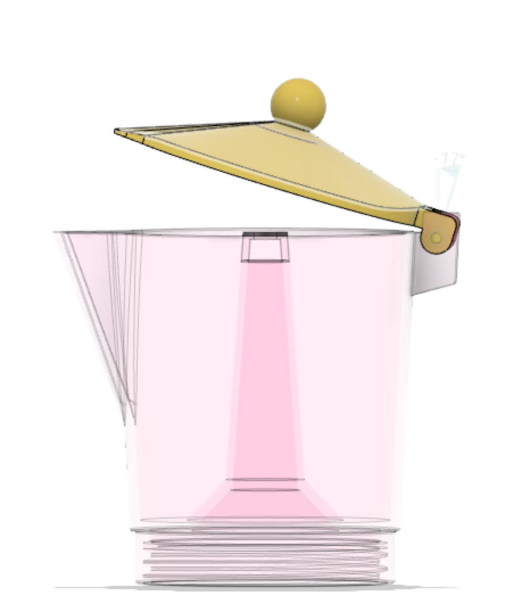

01 3D Renderings
3d designs
An exploration of objects in 3D through Fusion360 and Photoshop. From everyday construction of stamps to modern objects at home, the 3D space brings life to new perspectives. This study has allowed me to expand beyond 2D illustrations and understand the spacial relationship of an object with its surroundings.
Mokapot

Collaboration with Rachel Kim
I helped my fellow classmate and friend to render her bag collection into 3D objects for her interactive digital museum site.
Process
Objects
add the stl render thingyObject in situ